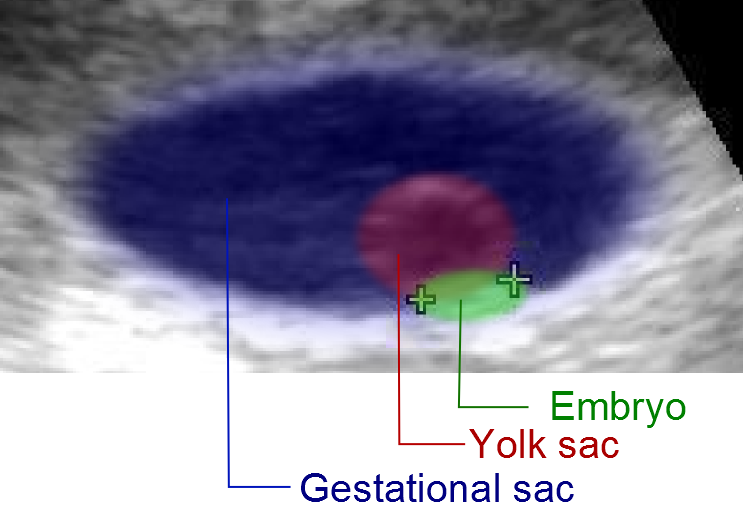

Duas armadilhas centrais: tratar 1.000 como “nascimento” da gravidez e fechar diagnóstico quando o beta não dobrou em 48 h. O canon MED convive com a nuance de segurança clínica.
ObstetríciaParte E · Limiares de betaItens 099–106Pegadinha de números
Tópico 1
O número ~1.000 e o que ele realmente carrega
Canon da fonte (MED):beta-hCG acima de ~1.000 associa-se a ~95% de certeza de gravidez (“praticamente certeza” na fala).
Tópico 2
1.500–2.000 e o útero vazio
Correlação com imagem: a partir de ~1.000 em geral já se espera saco gestacional; na lógica de ectópica / útero vazio, a faixa ~1.500 a 2.000 trabalha como limiar de “deveria haver saco — se não há no útero, procure fora”.
⚠️ Algoritmo completo de ectópica = tema futuro — aqui só o limiar.
Conduta prática esboçada na fonte: a partir de ~1.000, pedir US; se assintomática e saco ausente, repetir em 48 h (ex.: esperar ~2.000 e reavaliar saco).
Tópico 3
Duplicação em 48 h e a variante 66%
Comportamento de gravidez viável no início: hCG duplica a cada ~48 horas. Variante de livros: aumento de pelo menos ~66% em 48 h — sem preciosismo; a fonte manda guardar a duplicação.
Exemplos: beta 500 → em 48 h espera-se ~1.000; beta 1.000 → em 48 h espera-se ~2.000.
Tópico 4
Se não dobra: o que pensar (sem fechar o diagnóstico)
Se não dobra / não sobe como esperado: não é evolução normal — diferenciais incluem abortamento e ectópica (sem fechar qual só pela curva). Hoje se usa menos a curva isolada porque há maior disponibilidade de ultrassom; a curva ainda cai em prova.
Cinética do beta — duplicação em 48 h (regra de ouro de prova)
t = 0
t + 48 h esperado
Cenário
500
~1.000
duplicação clássica → viável
1.000
~2.000
duplicação clássica → viável
500
~800 (≥~60% de alta)
subida ≥~66% — variante aceita de livro
1.000
≤1.200 (≤~20% de alta)
não é evolução normal — série + US
Limiares do beta: 1.000 / 1.500–2.000 / duplicação 48 hTrês faixas horizontais sobrepostas à curva: sub-1.000 ainda sem imagem, ~1.000 zona de saco no US, 1.500–2.000 útero vazio preocupa. A curva verde mostra a duplicação viável; a tracejada vermelha mostra “não dobrou” (evolução não normal).Esquema autoral · SVG-piso (S9)

US ~5 sem — ancorando o número no mundo real
A imagem mostra um US obstétrico colorido de cerca de 5 semanas: saco anecoico, embrião de 3 mm e vesícula vitelínica. Serve para ancorar a leitura dos números (~1.000 e 1.500–2.000) num achado de imagem — o valor numérico exato continua no texto soberano, não inventado na legenda.
Obstetric ultrasound of embryo at 5 weeks (3 mm) with yolk sac. Original: X.Compagnion; colored derivative: Mikael Häggström. Licensed under CC BY 2.5 (also CC BY-SA 3.0). Source: https://commons.wikimedia.org/wiki/File:Ultrasound_of_embryo_at_5_weeks,_colored.png
Quiz — fixação
Beta 1.800, TVUS sem saco no útero, paciente estável. Leitura de prova do limiar + nuance de segurança:
Gabarito A.A faixa 1.500–2.000 com útero vazio acende a hipótese ectópica. Mas paciente estável não é interrompida só pelo valor + 1º US — série de beta + TVUS de qualidade.
(B)gravidez é possível com beta > 2.000 — o que se questiona é a localização, não a existência.
(C)viabilidade é curva + imagem em série, não número isolado.
(D)Pinard é ausculta tardia (~18–20 sem) — não resolve dúvida de 1º trimestre.
Por que cair na B/C:fechar diagnóstico por número isolado é a pegadinha da banca e o risco clínico de interromper gestação viável.
A regra de ouro de prova para cinética precoce de hCG é:
Gabarito B.Duplica a cada ~48 h é a regra. Variante ≥~66% em 48 h é o limite inferior clássico — sem preciosismo.
(A)triplicar a cada 24 h é exagero: a regra é 2× em 48 h, não 3× em 24 h.
(C)beta estável = suspeita, não normalidade.
(D)o beta sobe cedo, atinge pico 8–10 sem e desce depois.
Por que cair na A:a banca pode aumentar a régua para confundir — 3×/24 h é regra de outra coisa (não de beta-hCG).
O número ~1.000 mUI/mL, na leitura alinhada às fontes de zona discriminatória, associa-se sobretudo a:
Gabarito B.O canon MED do “95% certeza” permanece no texto com nuance; a leitura alinhada às fontes de zona discriminatória associa ~1.000 à expectativa de saco no TVUS.
(A)3º trimestre é outra janela — o beta já declinou nesse período.
(C)TIG vira positivo em limiar muito menor (~25 mUI/mL) — não é o 1.000.
(D)a placenta assume ~12 sem — não tem a ver com o número 1.000.
Por que cair na C:confundir o limiar de imagem (saco no US) com o limiar de positividade do TIG (5–25 mUI/mL).